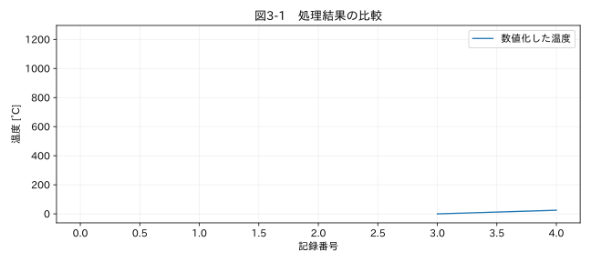

第I部 生データを理解する / 第03章
この章の節
データ型・日時・単位を統一する
学習目標
数値、欠損、変換不能を区別し、単位変換と日時変換の前提を明示する。Excel日付の基準とタイムゾーンを確認し、計算精度と測定精度を混同しない。
3.1 「数字に見える文字」の問題
12.5 MPa は文字列であり、そのまま平均を求めることはできない。単位を除いて数値化する場合も、すべての非数値文字を削除する方法は危険だ。1e3 のeは指数表記の一部であり、-2.5 の負号は値の意味を持つ。12 Pa をMPa列から勝手に数値だけ抜き出すと、100万倍の誤差を見逃す。
本書の numeric() は宣言した末尾単位だけを除去する。空欄と登録済み欠損コードをmissing、数値化できない非欠損文字列をinvalid_tokenに分ける。errors='coerce' は変換不能をNaNにする便利な方法だが、これだけでは両者を区別できないため、変換前のマスクを保存する。
3.2 桁区切りと小数点を明示する
「1,234」は、日本語の帳票では1234を意味することが多いが、小数点カンマの帳票では1.234かもしれない。ファイルの地域設定を推測して混ぜず、機器仕様に基づいて設定する。1.234,5 は桁区切りがピリオド、小数点がカンマなら1234.5だ。
全角の数字を半角へそろえるUnicode正規化は役立つが、記号が変わり得る。正規化後の値だけを原本扱いしない。桁区切りは3桁単位であることを確認し、「1,23」を黙って123に変えない。識別子や製造番号は整数にしない。先頭ゼロに意味があるためである。
3.3 整数、浮動小数点、欠損
測定回数は整数、温度は通常浮動小数点で扱う。浮動小数点は有限の桁で数を表現するため、0.1のような十進小数を正確に格納できない場合がある。加算結果を == で比べるより、工学的に意味のある許容差で比較する。ただし np.isclose の既定許容差がどんな測定にも適切というわけではない。
NaNは欠損の代表的表現で、NaN == NaN はFalseになる。欠損判定は isna() を用いる。整数列でも欠損を扱うにはpandasのnullable整数型 Int64 を選べる。表示桁数を減らすことと、計算用の数値を丸めることは別である。小さな圧力差を求める前に大きな圧力値を粗く丸めれば、差は消えてしまう。
3.4 Excel日付と混在日時
Excelの日付数値は基準日からの日数で、小数部が一日の割合を表す。0.5日は12時間だ。1900日付システムと1904日付システムがあり、単純に一つのoriginを全帳票に使ってはいけない。openpyxlの wb.epoch を確認する。1900システムの架空の1900年2月29日は、本書では不正な値として扱う。R6
2026年のISO表記でも、「09:00:00」と「09:00:00.100000」が混在すると、一つ目から推定した厳密な書式が他の行に合わないことがある。ISO 8601であることが分かっているなら format='ISO8601' と明示する。format='mixed' は便利だが、03/04/2026の月日順の曖昧さを解決してくれない。曖昧な帳票には個別の形式を与える。
3.5 タイムゾーンと単位
タイムゾーンを持たない09:00にUTCというラベルを付けることと、日本時間09:00をUTC00:00へ変換することは異なる。本書では既定をAsia/Tokyoとし、内部の基準時刻をUTCへ統一する。海外の夏時間切替では存在しない時刻や二度現れる時刻がある。自動的な推測で埋めず、機器のUTC記録やオフセットと照合する。
線形の単位変換は y = a x + b と書ける。MPaからPaならa=10⁶、b=0、摂氏からケルビンならa=1、b=273.15である。温度差1 °Cと1 Kは同じ大きさだが、絶対温度20 °Cは293.15 Kである。ゲージ圧から絶対圧への変換には基準圧の情報が要る。単に列名のMPaをPaへ変えるだけでは単位変換にならない。
関連する詳細実験は実践補講に掲載。入力形式・同期・補間・校正・多変量・チャンク境界を扱う。
実行するコードと結果
run.py · 共通処理の全ソース
教材フォルダで python examples/chapter03/run.py を実行。以下は省略のないスクリプト。共通モジュールは教材一式に含む。
from pathlib import Path
import sys
ROOT=Path(__file__).resolve().parents[2]
sys.path.insert(0,str(ROOT))
sys.path.insert(0,str(ROOT/'examples'))
import numpy as np
import pandas as pd
from common import load,truth,seconds,plot
from tsclean.core import numeric,timestamps,time_flags,hampel,freeze_candidates,interpolate_short,compare
values=['１,２３４.５ degC','---','故障','0','25.0 degC']
v,missing,invalid=numeric(values,unit='degC',thousands=',')
print(pd.DataFrame({'raw':values,'numeric':v,'missing':missing,'invalid':invalid}).to_string(index=False))
print('シリアル61（UTCとして解釈）:',timestamps([61],excel_epoch='1900',timezone='UTC').iloc[0])
print('20 °C =',20+273.15,'K')
plot(3,np.arange(len(v)),{'数値化した温度':v},'温度 [°C]',xlabel='記録番号')
検証環境での実行結果を開く
raw numeric missing invalid
１,２３４.５ degC 1234.5 False False
--- NaN True False
故障 NaN False True
0 0.0 False False
25.0 degC 25.0 False False
シリアル61（UTCとして解釈）: 1900-03-01 00:00:00+00:00
20 °C = 293.15 K

掲載例のシリアル61は、日付システムだけを確認するためUTCとして解釈し、1900年3月1日00:00 UTCとなる。実際のロガーが日本時間を記録したときはAsia/Tokyoを指定する。基準日の確認とローカル時刻の解釈を別の手順で確かめよう。
3.6 結果の受け入れ
図3-1では文字列から取り出せた数値だけを描く。大きな値が表示されても、正規化が正しいことと物理的に妥当なことは別である。1234.5という数値の変換に成功しても、温度として妥当かは測定レンジと試験条件で判断する。NaNをゼロへ変えて描けば、未知の値を0 °Cという測定値へ捏造してしまう。
演習
基礎演習
掲載コードの5要素について、数値化成功、登録欠損、変換不能を分類する。
応用演習
1.234,5 と 1.23,4 を小数点カンマ、桁区切りピリオドで変換する。後者を受け入れない理由を説明する。
実務演習
日本のロガーと欧州のロガーが同じ09:00を記録した。日付だけ分かっている。両者を結合する前に何を確認するか。
演習解答・解説を表示する
基礎：1234.5、0、25.0が数値化できる。--- は登録欠損、故障 は変換不能になる。「故障」は原因を示す重要な元文字列として保存する。
応用：1234.5と変換不能になる。3桁区切り規則に合わない値は、誤記か違う規則かが分からないため、勝手に修復しない。
実務：タイムゾーン、夏時間、UTCオフセット、時計の同期方法、日時表記、日付変更の有無、時計ずれを確認する。地域名だけから個別機器の設定を確定しない。
章末まとめ
変換前の文字列、変換後の数値、単位、変換不能の理由を残す。型の統一は意味の統一と組み合わせて初めて役に立つ。